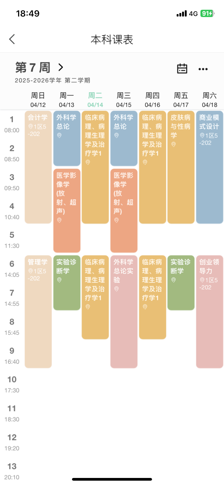

亲爱的爸爸妈妈：
大姐姐最近和我说，我在学校已经学习了3年，应该向你们汇报一下我的近况，无论是生活还是学习上。我想你们一定很好奇我在学校吃的好不好，学的累不累？前两年的我就不细说了，我说说这个学期的状况吧。
📚 关于课程与作息
这个学期从3月初开始，到现在已经上了一个半月的课。除了清明放了三天假以外，其他时候一周7天我全部要上课。下面是我的课表，7天都是早上8点到晚上5点半的课。

🍱 关于吃饭与锻炼
中午12:15下课去食堂，我一般会拿三个菜：一个膳食纤维，一个蛋白质，一个碳水。吃完回寝室差不多12:50，玩会儿手机，从1点睡到1:50，再去上下午的课（2点到5点半）。
晚上回寝室后，我第一时间先锻炼。我买了哑铃，从3月初到4月初练了一个月，分别是1.5kg的哑铃。从一开始拿起来气喘吁吁，到后来练完半个小时都不流汗、不喘气了。不过4月初复查出来有新的视网膜裂孔，所以得悠着点，不能太累。现在我又开始复健，还是用1.5kg的哑铃。每天下课回来练半小时，然后洗头洗澡，处理杂事。
💑 关于学习状态与男朋友
你们已经知道我有男朋友了。我们平时上课也坐一起，他上课比我认真很多，学得也扎实。我上课容易走神（这个坏习惯从高中就有了），他就特别喜欢和老师互动、认真做笔记，给了我很多正向的榜样作用。晚上从图书馆出来，我们会去学校附近散步，每天也能走动一下。因为平时上课、周末也没时间，谈恋爱花销很少，我俩的兴趣都是运动、看书，最多的就是聊天。
🏠 关于室友和同学关系
我和寝室的两个女生（陈乐乐、刘若菲）从大一开始就是室友，关系特别好，算是我大学里最好的一批朋友。虽然寝室条件没那么好，但非常开心和温馨。
班上的同学我也相处得很好，主要是性格活泼，跟谁都聊得来。之前大一大二评选优秀团员，我是唯一一个不是班干部却被选上的，单纯因为人际关系好。不过我没有利用这一点去做什么，我现在也不太想入党，因为那些事情对我来说太枯燥了，不想花时间在完全不感兴趣的东西上。虽然王力哥每次过年都跟我说要早点入党，但我交了申请书后，一点都不想去竞争积极分子。
🧠 关于大学学习的真实体会
妈妈可能不太清楚：大学里课程只是学习的一部分。我们不仅要坐在教室，还要去医院实习，自己找老师进实验室，参加各种活动，课外学习技能等等。课程分数虽然重要，但它是唯一可以被量化的成果，有应试的方法就能应对。我觉得真正能学到东西往往是在临床实习中，而不是课本上。
📊 关于辅修工商管理
我知道你们可能不太认可我报辅修，觉得我三天打鱼两天晒网，不认真学主修。这个学期我和辅修班的同学聊了，发现我们好像被学校“骗”了——这个自强创业班十年前确实办得好，全校选30人；但我们这一届只有11个人报名，所以都选上了。
这个学期上了四门课：商业模式分析、管理学、会计学和创业领导力。商业模式分析学到了一点东西；会计学是我最喜欢的，每节课做很多笔记；剩下两门挺水的，感觉老师就是拉着我们聊天。所以课程也不是一个学生的金标准。
班里有很多其他学院的优秀同学，他们课没我多，就会参加很多比赛、实习、做副业。我跟他们也学到了很多。我现在更觉得我不应该全是学生气，仅仅待在校园里。大学是学生和社会之间的连接平台，我应该借助它早一点接触社会。尽管医学生学习周期很长，但我不能被动跟着培养方案走——不然我也不会去选辅修。
辅修工商管理，不是说以后一定要做管理层，而是觉得学科交叉思维很重要。不是选了这个就必须学这个，也不是学了医就必须当医生。我只是想在本科最有时间、最有精力的阶段，去尝试、学到更多有用的东西，为以后提供更多选择和机会。
🚀 关于职业规划
我现在有两条路线：
1️⃣ 老老实实当医生——本硕连读，学校已经把最简单的路铺好了。
2️⃣ 以后去医疗相关的企业工作。辅修的管理学老师建议我，趁还没读专硕之前去这些企业实习，不然无法知道自己是不是真的想去。我已经投了几份简历，但都没有消息。我也在问有实习经历的同学，还在摸索中。
💪 关于生活费、身体和体重
每个月2000元挺好的，主要是这个月检查眼睛多花了一点钱，手上有点不够用，不过爸爸已经把💰转给我了。因为忙，没时间出去玩，钱都花在吃上。但每天有轻轻锻炼，所以没长胖很多。请妈妈放心，我体重还是120左右，开学122，现在119，其实没什么变化。但是手臂和腿上的肌肉比以前明显了，身体真的变好了。体重不重要，我身高本来就高，体脂率一直非常标准、正常。身体健康没有问题。
📖 关于成绩和心态
我在学校里的学习成绩可能算中等偏上，但我不是特别在乎绩点，因为它只跟奖学金有关（每年2000元），我完全没有为了这个去卷过。正常学习就好。
这个学期有了辅修之后，学长学姐告诉我：很多事情没法鱼和熊掌兼得。如果想成为跨学科或者涉猎广泛的学习者，就必须放弃一些东西。而且以后成为医生也一定会成为某个专科的医生，硕士只选一个方向，其他科的内容只是辅助或者全科思维。比如以后如果我干外科，那么这学期的内科学只需要及格就可以了。
当然，妈妈肯定会说“如果能学就要最好多学”，这点我清楚，只是精力真的没有那么多。无论怎样，我还是会继续努力。
📱 关于小视频和读书
我现在还是挺喜欢刷小视频，但有意控制在每天不超过1小时。最近开始养成读书的习惯，我觉得读小说比小视频有用多了——至少是几万字几万字地读，不会那么快转移注意力。
🤖 关于自学AI和计算机
我现在还在自学一些计算机相关的东西，不是专业性的，而是应用性的。我不需要搞懂底层逻辑，而是要学会如何高效使用AI，防止自己落后于这个时代。这也是我们商业模式设计课的老师说的。
以上就是我这个学期的真实情况。你们放心，我会照顾好自己的身体，也会继续努力的。
—— 小叮当
妊娠合并肺动脉高压患者病历整理 · 提取30+变量
🌟 还有很多其他和专业没有直接关系的大奖。其实，这些奖项不一定能代表我的专业水平，但可以代表我在本科大学期间参与了很多活动，还是非常快乐的。无论这些活动是玩的，还是学习什么技能，总而言之，你们只需要知道我过得挺开心的就可以了。